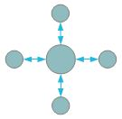
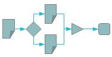
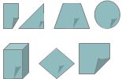

BlueDolmen est une initiative open source pour construire et mettre à disposition de tous les bases des échanges numériques de demain avec l'Etat, les Collectivités et les Organisations, quelles qu'elles soient.
Explications

Open source
Une contribution ouverte à tous sous licence "AGPL v3" avec un environnement "GitHub" de gestion des sources, de la documentation et des livrables et un "packaging" prêt à l'emploi.

Processus
Une contribution pour le développement, la gestion et le contrôle du nombre croissant de processus documentaires avec des services de parapheur, de délégation, de demande d'avis, de ré-assignation, de droits de remords, de statistiques, de notification, d'édition, d'injection de métadonnées, d'autorisation, de signature, de contrôle de légalité.

Applicatifs multiples
Une contribution intégrant de multiples applications métier comme la gestion des délibérations, des courriers, des arrêtés, des factures, des interventions, des incidents, des actes, des permis, des ordres de mission, des interventions.
Pour en savoir plus
Naviguez sur :
"Approfondir" pour en savoir plus sur BlueDolmen et pour s'assurer que certains modes d'utilisation actuels de BlueDolmen sont proches de ceux que vous souhaitez adresser dans votre organisation,
"Démarrer" pour voir ce qu'il faut et ce qu'il faut faire pour essayer BlueDolmen, pour obtenir BlueDolmen et pour commencer son installation et déploiement,
"Se projeter" pour voir dans combien de temps des fonctionnalités absentes dont vous avez besoin seront intégrées ou pas.
Démarrer en quelques minutes
Une machine virtuelle prête à l'emploi
Télécharger BlueDolmen (v1.0.0)
Démarrer
BlueDolmen est un produit, comme tous les produits d'aujourd'hui, qui intègre beaucoup de technologies. Bien que provenant de multiples contributions, un effort a été fait pour en faire un ensemble homogène et "packagé".
Des choix - expliqués dans la section 'Approfondir' - ont donc été faits, à la fois en s'appuyant sur l'expérience des contributeurs mais également pour faciliter au maximum le déploiement et le paramétrage du produit dans le contexte toujours spécifique de chaque client.
Ceci a abouti à fournir 2 types de 'packages' :
- Une machine virtuelle de type virtual box qui contient tous les éléments nécessaires à l'utilisation et au déploiement de BlueDolmen : reporter vous à la page wiki d'installation en machine virtuelle pour une description détaillée et cliquer sur ce lien pour la télécharger,
- Un 'package' à déployer qui contient tous les éléments nécessaires à l'utilisation et au déploiement de BlueDolmen hors système d'exploitation : reporter vous à la page wiki d'installation en machine virtuelle pour une description détaillée et cliquer sur ce lien pour la télécharger.
- Une fois l'un ou l'autre des 2 'packages' installés, les accès à BlueDolmen se font via web:
- taper http://:8080/BlueDolmen/paraphe pour accéder au parapheur
- taper http://:8080/BlueDolmen/courrier pour accéder à la gestion de courrier
- taper http://:8080/BlueDolmen/deliberation pour accéder à la gestion des délibérations
- taper http://:8080/BlueDolmen/arrete pour accéder à la gestion des arrêtés
- taper http://:8080/BlueDolmen/facture pour accéder à la gestion des factures
- taper http://:8080/BlueDolmen/incidents pour accéder à la gestion des incidents
- taper http://:8080/BlueDolmen/interventions pour accéder à la gestion des interventions.
Approfondir
BlueDolmen est le fruit de 6 années de travaux sur les technologies de gestion documentaire, de portail et de gestion de processus métier par les équipes des principaux contributeurs à ce projet Open source.
Ces équipes, malgré une offre commerciale relativement importante, ont dû, pour des raisons :
- techniques (difficultés d'interopérabilité et de multiplicité des technologies étant les plus courantes),
- fonctionnelles (difficultés de paramétrage, d'adoption et d'adaptation étant les plus courantes),
- et financières (coûts des versions 'entreprise' des offres Open source étant souvent au niveau des coûts des offres commerciales et les versions sans support peu fiables),
re-développer la majorité de ces composants - parfois plusieurs fois - sur des briques open-source avec plus ou moins de succès.
Ainsi, le socle BlueDolmen rassemble les composants et les briques technologiques qui ont connu le plus de succès auprès des organisations privés et publiques.
Et il n'y a pas d'offre entreprise: le niveau de qualité visée est optimal pour la seule version proposée, libre et open source.
L'architecture fonctionnelle de BlueDolmen est basée sur 4 couches de niveau métier décroissant:
- La couche 'Applications' propose un ensemble croissant d'applications métiers à destination des utilisateurs finaux.
Une application métier est composé de :
- une IHM soit sous la forme d'extensions indépendantes du portail Share, soit sous la forme d'une IHM extJS spécifique,
- un ensemble de processus métier : par exemple, la gestion des délibérations contient un processus avant séance et un processus après séance.
- La couche 'Services & Processus' propose un ensemble de services dont un service permettant le paramétrage de processus métier.
Les services proposés sont:
- le service de 'Paraphe' permet le paramétrage de processus métier,
- le service de 'Délégation' permet de déléguer des tâches d'un ou plusieurs processus métier à d'autres personnes,
- le service de 'demande d'Avis' permet de demander un avis à d'autres personnes sur une tâche d'un processus métier,
- le service de 'Ré-assignation' permet de ré-assigner une tâche d'un processus métier à d'autres personnes,
- le service de 'Droit de remord' permet d'autoriser et gérer des demandes de modification sur des documents validés,
- le service de 'Rapport' permet de générer des rapports sur l'utilisation de l'application métier concernée,
- le service de 'Statistiques' permet de calculer et afficher des statistiques sur l'utilisation des différentes applications métier,
- le service 'Notification' permet de lancer des notifications email lors de l'action des intervenants sur les processus métier,
- le service 'Injection de méta-données' permet d'injecter des valeurs de propriétés dans des documents MS Office et Open Office (par exemple, pour alimenter les cartouches de validation),
- le service 'Autorisation' permet de définir des autorisations d'accès aux documents par groupe fonctionnel dynamique,
- le service 'Édition' permet d'éditer en ligne un document MS Office ou Open Office,
- le service 'Contrôle légalité' permet d'initier et gérer la procédure de contrôle de légalité des actes traités dans le processus métier,
- le service 'Signature électronique' permet d'injecter une signature électronique dans un document PDF/A,
- le service 'Transformation PDF/A' permet de transformer un document MS Office ou Open Office en PDF/A.
- le service 'Traçabilité' permet de tracer toutes les actions utilisateurs dans les processus métier
- le service 'Horodatage' permet d'associer un numéro de chrono au nouveau paraphe créé dans un processus métier
- le service 'Archivage' permet d'archiver un document paraphé et/ou validé.
- La couche de base intègre les 3 outils au coeur du système:
- Le 'Portail' permet la composition de pages et donc la fourniture d'IHM ergonomique et adaptée à des applications métiers simples : le portail Share communautaire basé sur le framework Surf a été choisi car propose un très fort niveau de paramétrage et une intégration REST (donc souple) avec les autres composants comme la GED et le moteur de workflow,
- Toutes les données - documents, attributs des objets et documents manipulés, processus métiers - sont gérées par un 'Gestionnaire Électronique de Documents' qui fournit les services de base - comme un référentiel unique, la définition des attributs, la recherche plein texte et sur attributs et , la gestion des versions, l'accès concurrent aux documents, ... - : La GED Alfresco communautaire a été choisie car a pu être déployée avec succès sur de nombreux projets des contributeurs,
- Les processus métier sont gérés par un 'Gestionnaire de Processus Métier' qui assure les enchaînements suite aux actions des intervenants : le moteur jBPM a été choisi car c'est un produit éprouvé qui a une forte intégration avec la GED Alfresco.
Cette couche de base intègre également beaucoup d'autres outils fournis à travers ces 3 outils principaux comme un gestionnaire de base de données, un serveur SMTP, un serveur IMAP, un serveur CIFS, … : BlueDolmen s'appuie également sur ces outils pour la fourniture de ces services propres.
- La couche 'Adaptation' est une couche transversale qui assure les services d'administration et paramétrage de BlueDolmen:
- le service 'Administration' fournit un ensemble de fichiers de configuration et de service REST pour gérer les données et les processus métier (cette couche est à destination des administrateurs techniques),
- le service 'Configuration' fournit une extension à l'application 'Paraphe' pour définir et gérer les processus métier à travers des formulaires de saisie (cette couche est à destination des administrateurs fonctionnels),
- le service 'Testabilité' fournit une extension à l'application 'Paraphe' pour générer des tests automatiques des processus métier (cette couche est à destination des administrateurs fonctionnels),
- le service 'Migration' fournit un mécanisme permettant de migrer les processus métier actifs provenant d'autres applications (cette couche est à destination des administrateurs techniques & fonctionnels),
- le service 'Packaging' fournit un environnement de développement de services spécifiques au contexte client (par exemple: intégration d'une action dans un processus métier qui alimente une base de données spécifiques métier). Ce service s'appuie sur l'environnement de modélisation et de développement SIDE fourni dans BlueDolmen (cette couche est à destination des administrateurs fonctionnels et des développeurs).
Valider
BlueDolmen est une solution riche à la fois en termes de services accessibles via les processus documentaires, en termes de types de document gérés et en termes de processus documentaires pré-définis sur ces types.
Mais, est-ce bien le bon outil dans votre contexte ?
C'est pour répondre à cette question que nous vous proposons 2 parties dans cette page.
La première partie liste un ensemble de descriptions et de vidéos correspondant à des cas d'utilisation de BlueDolmen.
La seconde partie donne une matrice commentée de fonctionnalités et de cibles techniques de BlueDolmen.
Ces 2 parties peuvent vous aider à projeter un ou plusieurs modes d'utilisation de BlueDolmen à votre contexte considérant également que BlueDolmen fournit une couche d'adaptation qui permet:
- via une interface web:
- d'adapter les processus documentaires pré-définis,
- de développer vos propres processus documentaires,
- de configurer tous les services utilisées par les processus documentaires,
- de définir vos propres services en javascript,
- de valider vos processus documentaires via des tests générés automatiquement,
- de pouvoir migrer sur BlueDolmen des processus documentaires existants et actifs
- via un environnement de modélisation sous Eclipse:
- de modifier les types de contenus et leurs formulaires associés (formulaire de création, d'édition, de vue, de recherche),
- d'ajouter de nouveau types de contenu avec de nouveaux formulaires,
- de modifier la structure et le contenu des pages des applications,
- de modifier les sous-processus de base sur lesquels s'appuient les processus documentaires.
- de définir vos propres service sen java,
- d'étendre les services existants en java.
Cette couche permet donc les extensions nécessaires et potentielles aux adaptations spécifiques à votre contexte d'utilisation.
Se Projeter
BlueDolmen est en version 1.0 considérant :
- qu'il contient désormais un niveau de qualité suffisant pour une utilisation stable en mode production,
- que sa couverture fonctionnelle s'étend à la quasi majorité des services visés à l'origine et à plus de 2 applications métiers.
La roadmap de BlueDolmen est fonction de l'avancement des projets de ses principaux contributeurs. Aujourd'hui, ces contributeurs adressent des projets qui permettent de proposer l'intégration de nouvelles briques suivant la roadmap suivante - ce si ces projets se passent comme prévu dans les plannings prévisionnels - :
Version 1.1 - 06/2013:
- Intégration du service de contrôle de légalité
- Intégration d'une transformation PDF/A basé sur un serveur Windows et sur MS Office pour les documents MS Office afin d'obtenir une transformation PDF/A exactement identique à l'original (ce qui n'est pas le cas avec un serveur Open Office).
- Annotation des documents PDF
- Intégration d'un chrono pour tous les documents
- Gestion des interventions
- Gestion des incidents
Version 1.2 - 08/2013:
- Extension de la testabilité aux transitions conditionnelles
- Solution d'Archivage des documents et des paraphes.
- Gestion des permis
- Gestion du protocole
Version 1.3 - 10/2013:
- Gestion des ordres de mission
- Gestion des actes